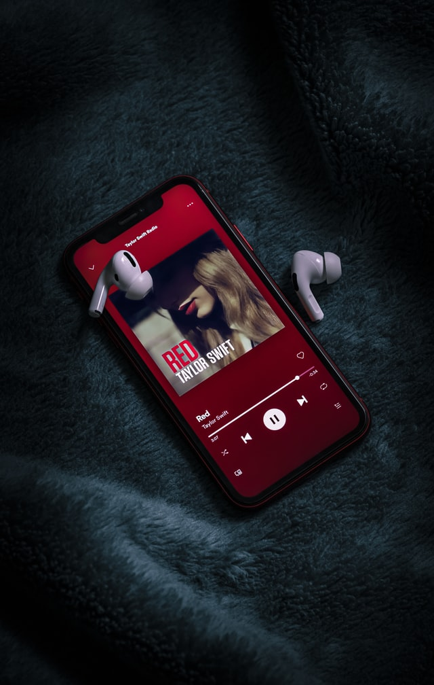

Music
“Music gives a soul to the universe, wings to the mind, flight to the imagination and life to everything.” ― Plato Music is often seen as a universal language that connects everyone. It is no secret that music is one of the biggest industries in the world today. Nowadays music is easy to find and almost everyone has some form a streaming platform from Apple Music, Spotify, Pandora, and many more. Music has changed and developed of time from composers like, Mozart, Beethoven, and Bach. Who composed beautiful classical pieces to artists nowadays like Taylor Swift, Harry Styles, and Arianna Grande who sing lyrics and have songs produced to be on the mainstream radio. Music is unique in the way that everyone has their own taste and style not everyone likes the same music, but everyone can appreciate the impact it has made in our society that is why music is considered the universal language.